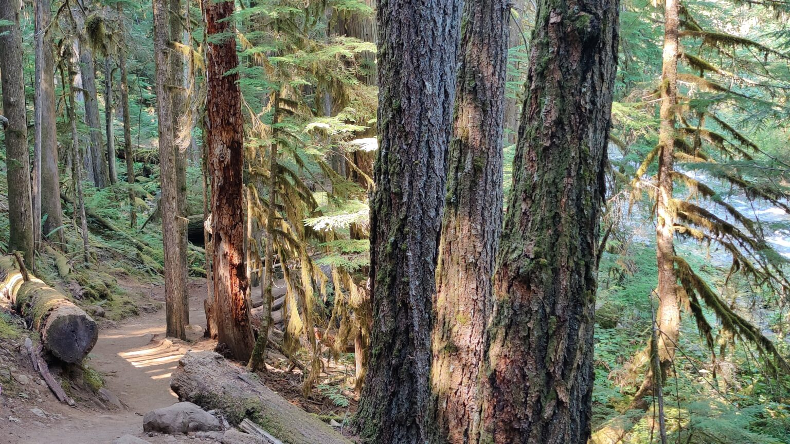

Our latest destinations
Field notes from the trail.
Every entry starts as a trip we actually took — scouted, walked, driven, and documented. No stock photos, no hype.
Journal

Every entry starts as a trip we actually took — scouted, walked, driven, and documented. No stock photos, no hype.